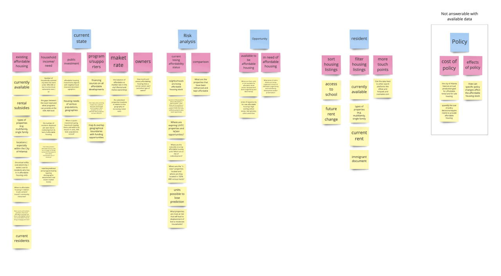

Housing ATL Dashboard
Leverage housing data for local analysts

Challenge
Multiple NGOs in Atlanta collect affordable housing data on their own part. But there is no approach that connects these data together to provide a complete picture of Atlanta affordable housing. The lack of a centralized database make it difficult for NGOs to streamline their own data collection and analysis process, to access data falls outside their own organization, and analyze the situation as a whole.
House ATL data collective is aimed to create an online Dashboard where Metro Atlanta Affordable housing data is collectively updated by public agencies and can be accessed by both agencies and general public to get insights.
Role
UX Designer
Duration
Jun 2019 - Aug 2019
Tools
Pen & Paper, Figma, Miro
Process
As the only designer on the team, I drove conversations among developers and housing experts to collaborate. I built and iterated the information architecture, a mix of lo-fi to hi-fi mockups, in short feedback loops. Finally I shipped deliverables including final prototypes and the design kit.
Design highlights
Discover
This is the first time that I'm not directly engaged in user research, but have to communicate with researchers about what they found from end users. I read through the documentations, talked to different teams and build my understanding of the project by re-synthesizing the data with multiple UX methods.
Define
Who wants to make sense of housing data?
After going through the PD workshop data including photos, notes, and encoded data, I built two personas to summarize who we are designing for. I also use personas to help discussions among the teams and achieve an agreement on the features of the end-users.
How do we measure success?
Confirming what my stakeholders and co-workers expect of the outcome, I planned the project timeframe and worked toward the goal.
Design
Building upon co-design workshop legacy
PD workshop is a co-designing activity where users and designers work together to try to solve the challenge, which means there are a tons of design ideas to mine from PD data. So I took the time to read through and re-analyzed the encoded PD workshop data.
What do they want to learn about the data?
Using post-its to map questions out helped me to drag them around more easily and apply multiple methods to analyze them.

I sub-categorized the questions on the legacy of previous analysis, updated the unanswerable questions, and counted questions on higher-level dimensions to decide the primary functionalities of the dashboard.
Information architecture
Combining process analysis, output analysis and user requirement data from PD, I synthesized the user requirements raised into an information architecture and identified
With these two summary, I am able to illustrate the basic structure of the product to guide the design. With its help I also
UI style
Stakeholders requested that the brand style be emphasized in the dashboard. Starting from the existing visual identity, I explore with typographical system, color scheme, button styles and delivered a UI style that both works within and expands the current brand.
Communicate with mockups
Every week I want to sync the teams on design decisions from big directions to visual styles, from detailed interactions to feasibility assessment. To efficiently ensure design decisions with developers, housing experts, and stakeholders, I used a mix of wireframes and hi-fi mockups to communicate and iterate in short feedback loops.
Validate
Heuristic evaluation and iteration
I made an heuristic evaluation plan and conducted 3 evaluation sessions. After measuring the identified issues, I made some key iterations. I also wrote a report to document the plan and issues to inform future iterations.
Final review
On my last day of the summer job, all 3 teams met up to present the work to our stakeholders. After the presentation, I shipped the final design, assets and style guideline to the team. The implementation is schedule fall， 2019.
"This is really great, I especially like the 3 tabs and different layers relating to them, it is really user-centric and can save a lot of time in analysis" 
- Sara from Enterprise Community Partner
Moving forward
Can we dig deeper into what users actually need?
In the mvp we just want to show users and stakeholders that our product can answer their questions straightforward, but is there deeper need under their straightforward questions? How better can we leverage the dashboard and GIS capability to provide deeper insights?
The ignored part
How to manage the whole system? What about edge cases? If data has wrong format? Who can make changes to the master? Is it like the uploaded data is just a branch of a larger dataset? What about version control?
What if more topics emerge as the database expands? What if users requested to have more filters and layers? What about the scalability of the design?